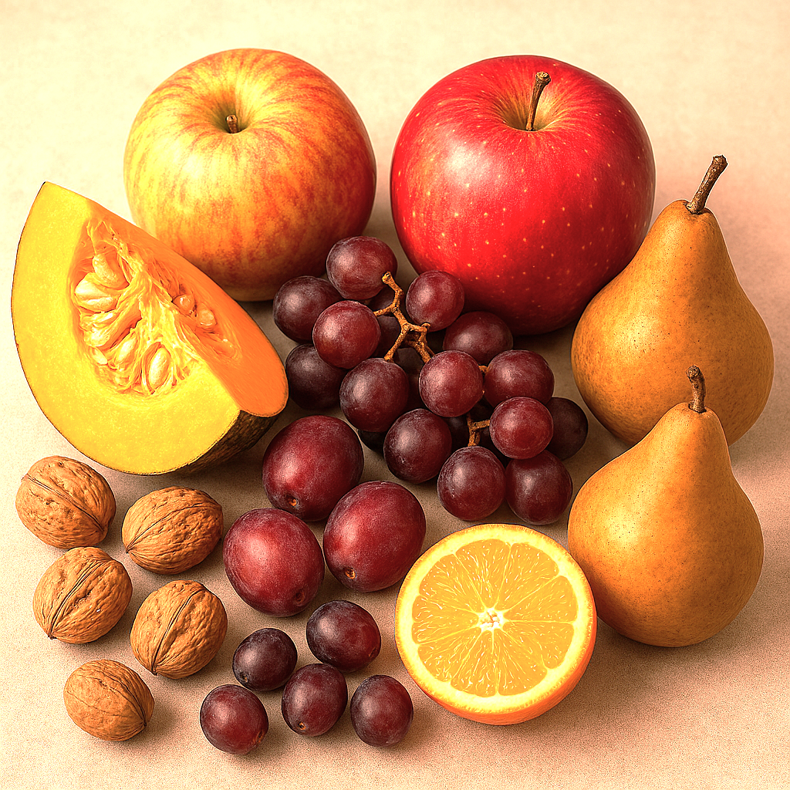
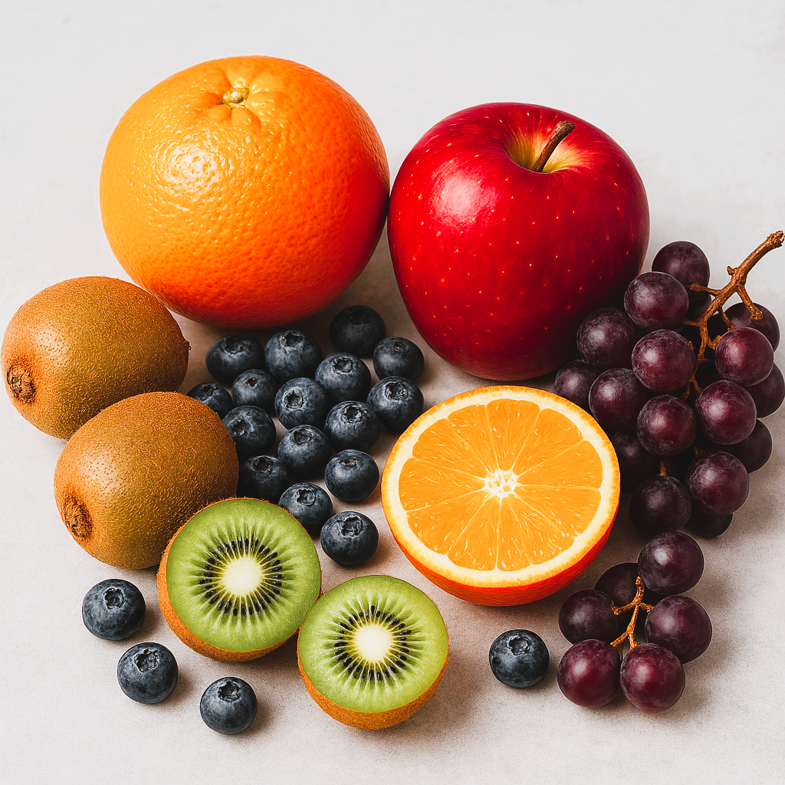
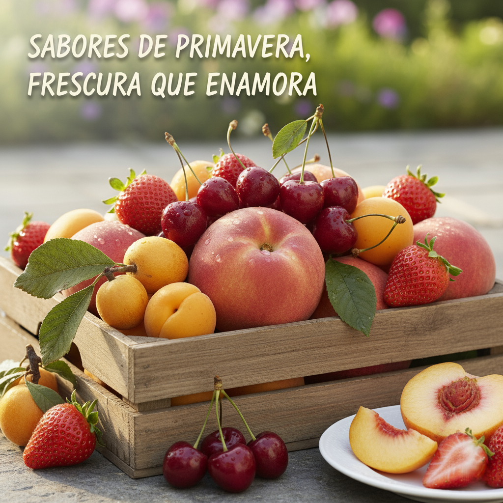
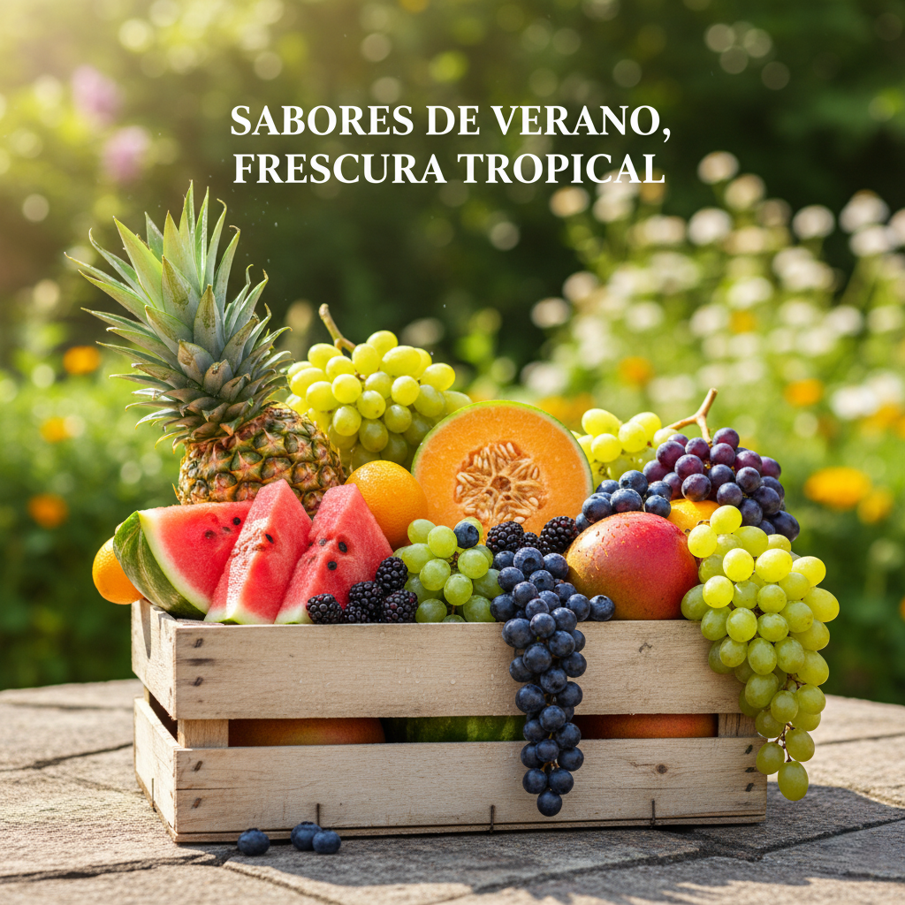

primavera

Verano

Otoño

Invierno




Con la llegada de la primavera, la naturaleza nos regala una explosión de color y sabor en forma de frutas. Dejamos atrás los cítricos del invierno para dar la bienvenida a una sinfonía de sabores frescos y jugosos que nos llenan de energía.
Imagina la textura suave y aterciopelada de un melocotón, con su aroma dulce que nos transporta directamente a un huerto soleado. O la jugosidad vibrante de una cereza, pequeñas joyas rojas que estallan en la boca, dejando un sabor dulce y ligeramente ácido.
La fresa, reina indiscutible de esta estación, nos deleita con su sabor dulce y su perfume inconfundible. Es perfecta para ensaladas, postres o simplemente para disfrutarla sola, con su frescura inigualable. Y qué decir de los albaricoques, con su piel delicada y su pulpa dorada, una verdadera delicia para el paladar. No podemos olvidar los nísperos, con su sabor único y su aroma que evoca a los días cálidos.
Son una fuente de vitaminas y nos ayudan a hidratarnos. Todas estas frutas son el reflejo de la vitalidad y el renacimiento de la primavera, y cada bocado es una celebración del sabor y la frescura. Así que, en esta primavera, aprovecha la oportunidad de disfrutar de estas frutas maravillosas. Incorpóralas en tu dieta diaria, ya sea en batidos, ensaladas o simplemente como un snack saludable.

Con el sol en lo alto y los días más largos, el verano nos invita a disfrutar de una explosión de sabores tropicales y refrescantes. La fruta de verano es sinónimo de hidratación, dulzura y la alegría de las vacaciones.
Imagina la jugosidad inconfundible de la sandía, con su interior rojo vibrante y sus semillas negras, perfecta para calmar la sed en los días más calurosos. O el dulce y exótico sabor del melón, con su pulpa anaranjada que nos transporta a playas lejanas.
La piña, con su corona majestuosa y su sabor agridulce, es la estrella de cualquier postre veraniego o bebida refrescante. Y qué decir de los mangos, con su piel dorada y su carne suave como la seda, una verdadera delicia tropical.
Las uvas, tanto blancas como tintas, llegan en racimos, pequeñas perlas de dulzura que explotan en la boca. Y para los amantes de los sabores intensos, las moras y los arándanos nos ofrecen ese toque ácido y dulce, ideal para batidos y mermeladas. Todas estas frutas son un regalo del verano, perfectas para disfrutar solas, en ensaladas o como ingrediente principal de postres ligeros y refrescantes. Su frescura y sus colores vibrantes son un reflejo de la estación más esperada del año.